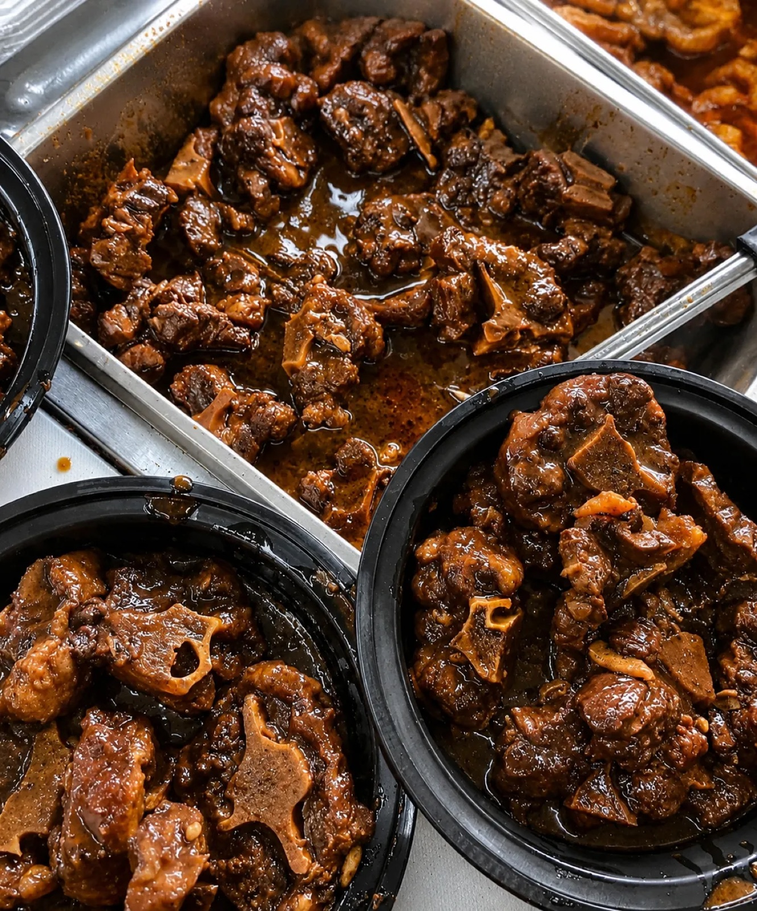
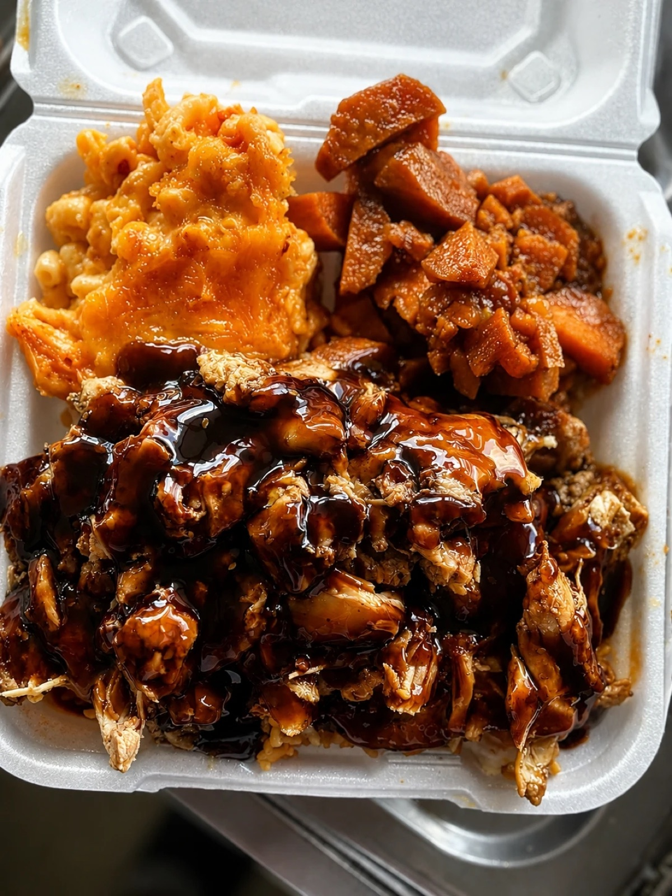
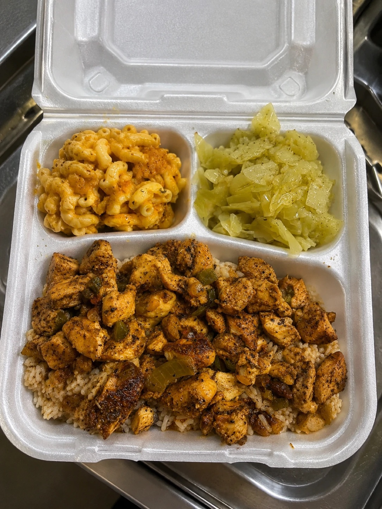

Events that fit the truck
Office lunches, neighborhood pop-ups, community days, school and church events, birthdays, graduations, and corporate appreciation days.
The Island Boy Kreationz truck pulls up, the window opens, and your guests order hot Caribbean soul food made on the spot — wings, oxtails, bowls, and sides straight off the line.
Office lunches, neighborhood pop-ups, community days, school and church events, birthdays, graduations, and corporate appreciation days.
The truck arrives ahead of your service window, sets up, and serves your guest list or open line. You set the window; the team handles the rest.
Date, address, guest count, service window, and menu direction. The team confirms fit, travel, and timing before anything is locked in.
Oxtails, wings, chopped chicken, curry chicken, shrimp and salmon bowls, rice and peas, yellow rice, cabbage, candied yams, mac and cheese, cornbread, cakes, and drinks.

Oxtails & rice and peas
Chopped chicken bowls
Curry chicken mealsDate, address, guest count, service window, and menu direction — through the form, or by call or text at 980-785-8372.
Event fit, travel, timing, and menu get checked before anything is quoted — no surprises on either side.
Once the window is confirmed, the truck rolls or the trays land — hot, on time, and portioned for your crowd.
Good to know: The truck is based in Charlotte. Confirmed website service areas are Charlotte, Concord, Gastonia, and Huntersville; every event is reviewed for date, travel, and site fit.
Level parking with safe access for guests. Send venue instructions with your inquiry and the team will flag anything else.
Yes — open-line service or a set menu for your guest count both work. Say which direction you want when you inquire.
Send the date, address, and guest count. The team will confirm honestly whether travel fits before quoting.
Use the form so the team can review event fit, travel, timing, and menu before quoting.